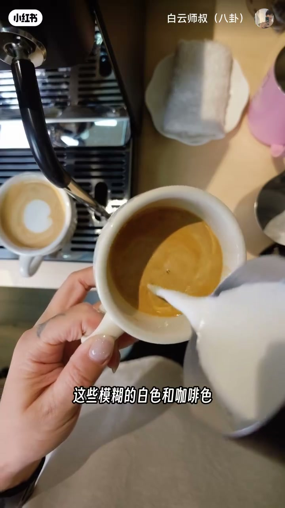

内容要点
白云师叔把「融合高度」钉成拉花地基变量：过高（>10cm）冲破 crema 导致脏污混色；过低（<约2cm）奶泡抢先铺满无法起花；理想约 5–10cm（实操常 8–10cm）再迅速切到起花高度。练习法是奶缸标记建立肌肉记忆。
知识结构
>10cm 破坏 crema→脏污混色；<约2cm 奶泡外溢铺满→未起花已全白。
理想约5–10cm（看杯型）；实操常8–10cm融合后迅速切低起花，高→低切换是关键动作。
奶缸贴纸/画线对应10cm角度；融合拉高、起花放低练稳=地基。
融合高度差两公分就能让图案天差地别。先守 crema 不被冲破、奶泡不抢跑，再谈天鹅郁金香；把「高融合→低起花」练成肌肉记忆，才算地基打好。
00:00-00:30过高破坏 crema；过低奶泡抢先铺满
同一缸奶泡，融合高度差两公分，图案天差地别。注入点太高超过十公分，奶泡冲进咖啡太深会破坏表面 crema；模糊的白色和咖啡色混在一起，既有融合奶泡又有翻上来的咖啡液，整体脏脏的。00:10 字幕「这些模糊的白色和咖啡色」钉住该故障。
注入点太低低于约两公分，奶泡极易流出去——还没起花奶泡全跑了，整杯几乎全白只带一点咖啡，同样不干净。

00:30-00:54理想5–10cm；高融合后切低起花
比较理想的融合高度大概在 5 到 10 公分，具体还看杯子大小和杯口深度。这个高度的奶泡有足够冲击力冲入咖啡液，又不会破坏表面 crema。
实操中融合可能在 8 到 10 公分左右，融合到一定量后迅速切换到起花高度——从高到低的角度切换时间点非常关键，是拉花过程重要动作之一。
00:54-01:31奶缸标记练高度；肌肉记忆打地基
高度怎么练：通常可在奶缸上做标记，例如 10 公分时大概对应杯子什么角度，贴纸或画线；久了形成肌肉记忆，每次融合起花都有大概高度。
拉花久了就是肌肉记忆：融合拉高、起花放低，两个动作练熟稳了，地基就算打好；地基不稳就别谈天鹅、郁金香、树叶。片尾欢迎留言想知道的技巧。
完整转录（34段）
以下文本由 Whisper medium 模型自动转录，可能存在少量识别误差，已尽可能修正。
融合一缸奶泡 但是就因为融合的高度差了两公分
做出来的图案天差地别
融合的时候注入点太高 超过十公分以上
你的奶泡冲到咖啡太深了 会破坏表面的CREMA
融合的时候这些蘑菇的白色和咖啡色就混合在一起
你既看到CREMA融合的奶泡 又有一些咖啡液底翻上来
就整个图案看起来非常的 有点脏脏的感觉
如果融合的时候 注入点太低 低于两公分左右
你就会发现 因为太低了 奶泡就非常容易流出去
你在融合的时候就会发现
我还没有开始起花呢 奶泡全跑了
这整杯咖啡全都是白白的 混合一点点咖啡色
整体看起来也是非常的不干净
那么比较理想的融合高度 大概是在5到10公分左右
具体的话也会看你的杯子大小 然后杯口的深度
在这个高度的奶泡 有足够的冲击力
可以冲入到咖啡液当中 并且不会破坏表面的CREMA
实际操作过程当中 融合的高度可能在8到10公分左右
融合到一定量之后 会迅速的切换到起花的高度
这个从高到低的角度切换的时间点非常的关键
从高到低的切换是拉花过程当中非常重要的动作之一
女小伙伴就会问了 这个高度的掌握 我有没有什么练习的方法
通常你可以在奶缸上面做一些标记
比如说我在10公分的时候 大概在我的杯子的什么角度
可以在奶缸上标出来 贴上贴纸或者说画上线
也可以以这样的方式去练习 时间久了之后
你也会有一个肌肉记忆 那每一次去融合起花
你都会有一个大概的高度 拉花其实时间久了就是肌肉记忆
融合拉高起花放低 只要把这两个动作给它练熟练稳了
咱们这个地基就算是打好了 地基不稳 楼就盖不起来
就更不要说后面我要拉什么天鹅 玉金香树叶了
OK 关于拉花的小技巧还有什么想知道的
欢迎在评论区给师叔留言
Six Coffee 开出套 这里是白云师叔 我们下个视频再见 拜拜